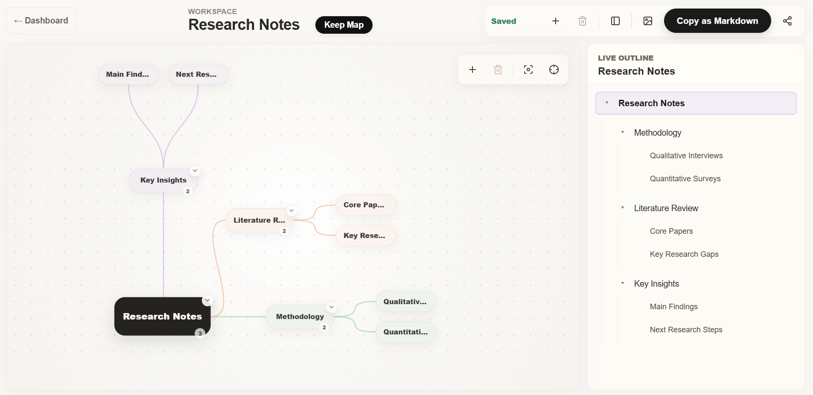

Building the product wasn't the hard part. Getting users to experience its value was.
Dandli is an AI-powered mind mapping tool that transforms messy notes into structured visual maps. I built and launched it, instrumented the onboarding funnel with Mixpanel, analyzed real user behavior, and identified an activation problem preventing users from reaching core value. Signup conversion went from 14% to 32% — without adding a single new feature.
If users understand the product, why aren't they reaching the feature that makes it valuable?
Most productivity tools force people to choose between two extremes. Note-taking tools are fast but linear. Mind mapping tools are visual but require structure from the start.
The problem is that people rarely think in either format. Ideas begin as fragments. Research notes are messy. Thoughts arrive out of order. Structure emerges later.
Dandli was built to work the same way people think: paste chaos, generate structure, refine visually, export cleanly.
Dandli combines two representations of the same information, synchronized in real time.

Before writing any code, I defined three core workflows that would shape every product decision.
The product shipped. That's when the real work started.
Building features answered one question: can this product create value? Launch introduced a different question: are users actually reaching that value?
The first thing I implemented after launch was analytics. Every major user action was tracked through Mixpanel.
The goal wasn't measuring vanity metrics. The goal was understanding exactly where activation broke — and why.
The numbers told a clear story — but not the one I expected.
Users weren't rejecting Dandli. They were experiencing the wrong version of it.
The dashboard presented two choices that appeared equally important. But they were not equally valuable for a first-time user.
The activation problem wasn't inside the editor. It happened before users ever reached it.
The landing page explained features. It did not clearly demonstrate transformation. Once signed up, the onboarding flow did not guide users toward the strongest path to value.